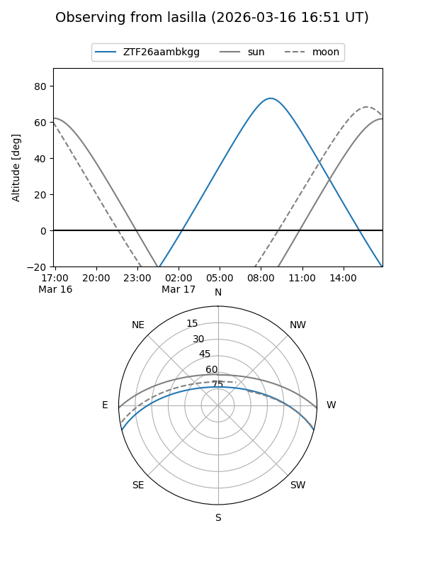
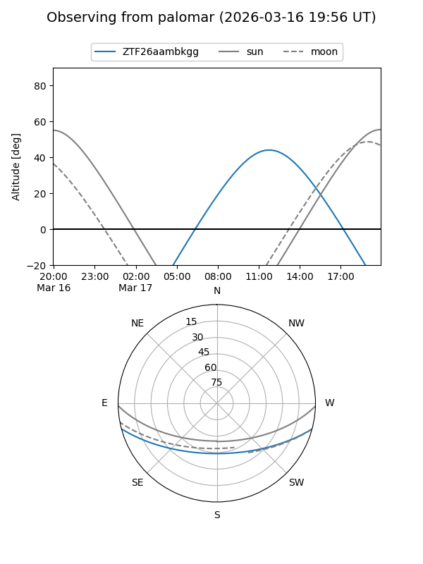

ZTF26aambkgg
Target ZTF26aambkgg at 2026-03-16 13:20
Aliases and brokers:
FINK: link
Lasair: link
ALeRCE: link
alt names
ZTF26aambkgg (ztf,fink_ztf)
Coordinates:
equatorial (ra, dec) = 234.4617,-12.43979
equatorial (HMS+DMS) = 15:37:50.82,-12:26:23.23
galactic (l, b) = (353.9509,+33.48089)
Flags:
Photometry:
last ztfg=16.55
1 ztfg detections
Lightcurve
Visibility


Additional plots